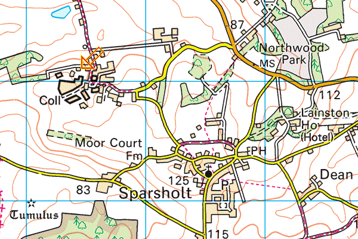

Hampshire Cross-Country League
Sparsholt College, Winchester

Location
For the first time, the Hampshire Cross-Country League visits Sparsholt College, approximately 5 miles north-west of Winchester on the B3049 Stockbridge Road, where the meeting is being hosted by Winchester & District AC.
After leaving the main road, please drive slowly and at the three-way junction, go right and follow strategically-placed signs.
Sat Nav destination
Postcode: SO21 2NE (at the corner bend at Westley Cottages, when you first enter the campus off Westley Lane)
Events & timings
The event timetable is similar to usual, and includes Under 11 races before the League races:
| 1115 | Under 11 Girls *** Please note the start time *** | 2.0km |
| 1130 | Under 11 Boys | 2.0km |
| 1200 | Under 13 Girls | 3.0km |
| 1215 | Under 13 Boys | 3.0km |
| 1230 | Under 15 Girls | 4.0km |
| 1250 | Under 15 Boys | 4.0km |
| 1305 | Under 17 Women | 4.0km |
| 1335 | Senior Women (including Veteran and Under 20 Women) | 6.0km |
| 1410 | Under 17 Men | 6.0km |
| 1430 | Senior Men (including Veteran and Under 20 Men) | 9.2km |
Parking
Although there is ample parking available in the College grounds, car-pooling is recommended if possible. The four parking locations will be clearly marked - please follow signage and directions of the Marshals there to make everyone's life easier. There will be a £2 per vehicle entry fee to the car parks and the correct change would be appreciated.
Pets
Only fully inoculated assistance (Guide) Dogs are allowed in the grounds of the College and then only after they have been registered with the College offices with proof of inoculation. No other pets are allowed in the college grounds.
Start/Finish area and other facilities
Will be clearly sign-posted. Maps of the various distance routes will be on display. Toilets and a College-organised catering van facility will also be available there. First Aid support will be centrally based in the Start/Finish area.
Sparsholt College has advised us that they will unlikely be able to take debit/credit cards for payment of refreshments at their own van.
This is due to the weak phone signal at their location, that might well also make the use of mobile phones during the day difficult.
Can everyone coming therefore please bring cash along for your tea, coffee, water, soft drinks and the fast food that they will be offering.
Alternative refreshments
Available in the Bytes café (open 10:00-18:00) close by the main Car Park.
Course maps and routes
Download Under 11 Boys' and Girls' course
Download Under 13 Boys' and Girls' course
Download Under 15 Boys', Under 15 Girls' and Under 17 Women's course
Download Senior Women's and Under 17 Men's course
Download Senior Men's course
Download complete set of all five courses
The courses will be properly roped off. All athletes must stay within these clearly-identifiable boundaries and everyone must stay off all football/rugby pitches, whether warming up or actually competing. Marshals will be strategically located around the various routes and will have walkie-talkie phones for ease of communication in the event of any unusual or unexpected incident or activity.
Routes
The Under 11 and Under 13 routes stay within the boundaries of the sports pitches and are on grass so suitable for spikes. All other distances have short stretches in woods which have a number of exposed tree roots and a mixture of earth and gravel base. The large field is mainly rough grassland. The courses are suitable for spikes but please take care in the woods, some athletes may prefer to run in trail shoes. (Please note: this advice has been updated since it was originally published.)
IMPORTANT
Please don't warm up on, or run across any marked football pitches.
Club tents
Please respect the above guidance when setting up club tents. Marshals will be on hand to direct accordingly.
Further information
Sparsholt College (external link)